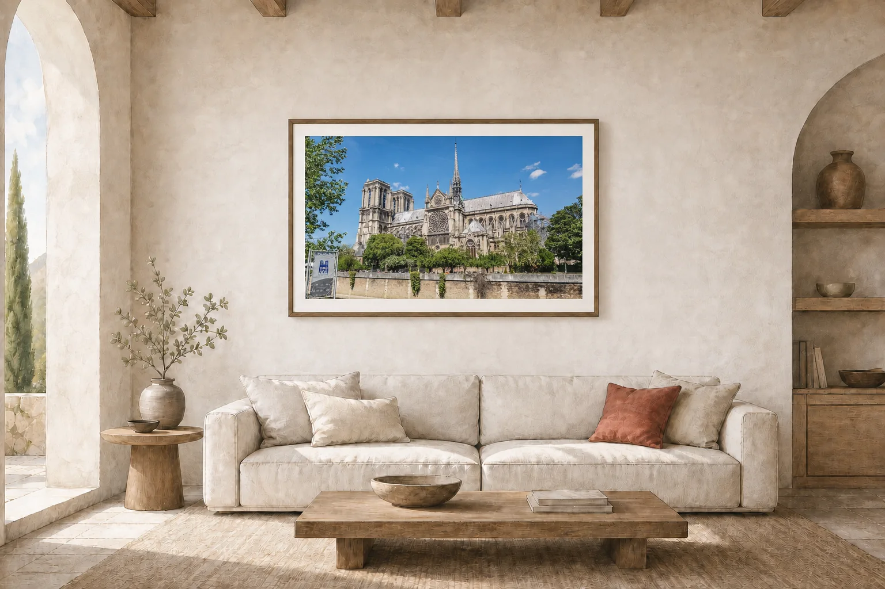
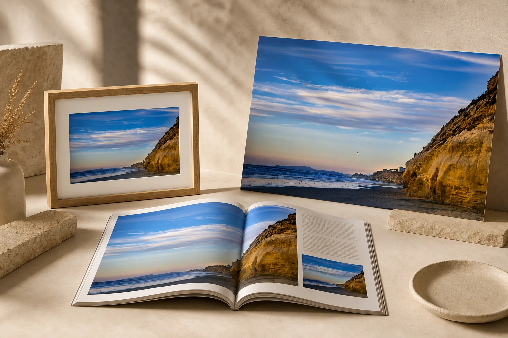
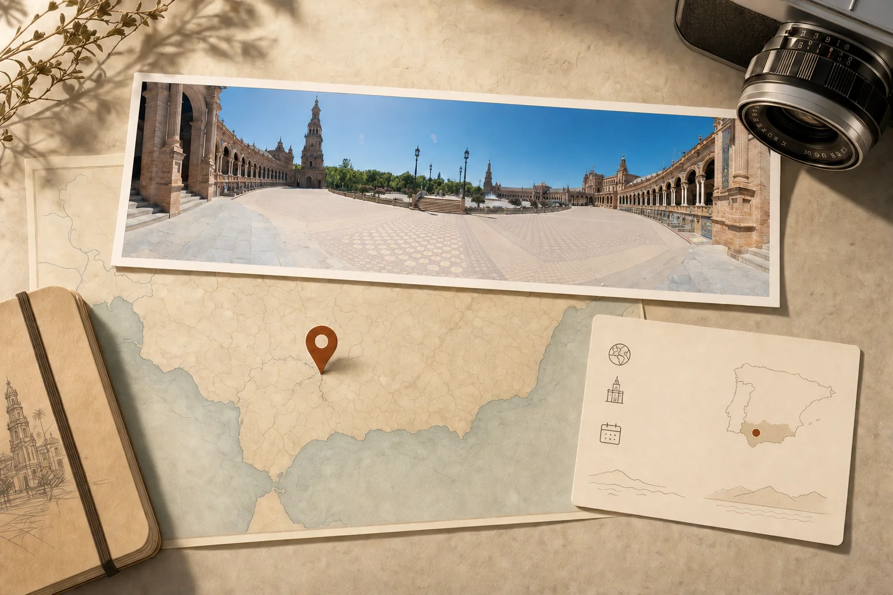

Places, light, and the moment between
Paris after the crowds
The Louvre, Paris
Selected work
Photography that lets a place breathe.
Travel, architecture, coastlines, and lived-in spaces—observed patiently and presented without getting between you and the image.
From discovery to use
Find the image. Know what you can do with it.
Country, region, city, year, and a photographer's note provide useful provenance while sensitive exact coordinates remain private.

Personal, editorial, or commercial

Location
 SeriesSpainPlaza de España, Seville
SeriesFranceThe Louvre, Paris
SeriesSpainPlaza de España, Seville
SeriesFranceThe Louvre, Paris
 SeriesItalyFlorence
SeriesItalyFlorence
 SeriesUSASolana Beach
SeriesUSASolana Beach
 SeriesMexicoPuerto Vallarta
SeriesMexicoPuerto Vallarta
 SeriesPortugalCascais
SeriesPortugalCascais